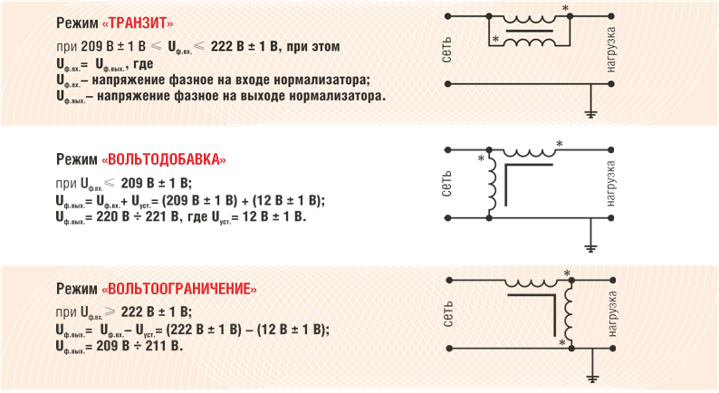

Despre tehnologie
Despre tehnologie
Produsele NPP LLC AVEC sunt dispozitive - normalizatoare de tensiune AC trifazate cu funcție de economisire a energiei și control pentru fiecare fază pentru rețele de 0,4 kV cu o putere de la 35 kVA la 500 kVA, produse în serie sub marca comercială NORMEL™®© , care sunt conectate la intrările electrice ale clădirilor și structurilor , echipamentelor industriale, iluminatului stradal, i.e. tuturor consumatorilor de energie electrică (de la o unitate de echipament electric la un complex de clădiri).
Întreprinderea de cercetare și producție LLC AVEK este un dezvoltator, producător și proprietar oficial al proprietății intelectuale în lume pentru produsele pe care le produce.
Efectul utilizării normalizatorului, unicitatea acestuia
Unicitatea și diferențele fundamentale ale normalizatorului de tensiune AC NORMEL cu o funcție de economisire a energiei de la toți stabilizatorii și regulatoarele de tensiune care funcționează în prezent în lume:
Împiedică pătrunderea în sarcină din rețeaua de interferențe de impuls și de înaltă frecvență;
Adaptabilitate ușoară la rețelele electrice existente;
Eficiență 99,7%;
Greutatea și dimensiunile sunt de câteva ori mai mici decât toți analogii cunoscuți;
Costul normalizatorului este mai mic decât toți analogii indirecti cunoscuți;
Reducerea consumului de energie electrică (sub rezerva creșterii tensiunii) cu până la 25%;
Creșterea duratei de viață a echipamentelor electrice conectate la normalizator de 2-4 ori;
Economisirea totală a resurselor materiale și financiare este în medie de 60%.
Dispozitivele de normalizare a tensiunii AC NORMEL™®© nu au analogi la distanță în lume și sunt unul dintre elementele principale ale sistemelor moderne inteligente de susținere a vieții, cum ar fi Smart Grid, Smart City, Smart Home. Principalele efecte ale utilizării NORMEL™®© AC dispozitive de normalizare a tensiunii .
1) Eliminarea defecțiunilor în funcționarea oricăror echipamente și a defectelor de fabricație asociate cu supratensiunile în rețea. După cum arată 10 ani de experiență în utilizarea normalizatorilor la întreprinderile din Rusia, CSI și SUA, efectul economic cumulat în unele cazuri a ajuns la 78%.
2) Durata de viață a echipamentului crescută (de până la 6 ori). Datorită modului blând de alimentare cu energie și protecție împotriva impulsurilor și interferențelor de înaltă frecvență, tk. utilizarea normalizatorilor permite îmbunătățirea calității energiei electrice în conformitate cu standardele interstatale pentru standardele de calitate a energiei, de exemplu, GOST 32144-2013 și standardul european identic EN 50160: 2010, precum și toate standardele similare din alte regiuni ale lumii.
3) Economii semnificative la consumul de energie electrică de până la 25%, după cum arată experiența de 10 ani în utilizarea normalizatoarelor, datorită metodei patentate de limitare a tensiunii și descărcare a liniilor de alimentare prin curent.
4) Perioada de amortizare pentru regulatoarele de tensiune AC NORMEL™®© nu este mai mare de 1,5 - 2 ani (atunci dispozitivele devin investitori - vezi paragrafele 1),2),3)).
Astfel, utilizarea DISPOZITIVELOR NORMEL™®© DE NORMALIZATOR DE TENSIUNE AC PERMITĂ ECONOMIAREA RESURSELOR FINANCIARE ȘI A ALTE RESURSE:
1. DATORITĂ REDUCERII CONSUMULUI DE ELECTRICITATE (după contor) de la 7% la 25% în funcție de natura sarcinii electrice, pe baza reglementării tensiunii consumatorilor de energie electrică
2. DATORITĂ ÎN CĂRȘTERE SEMNIFICATIVA A DURAȚII DE UTILIZARE ȘI ABSENTĂ A ÎNTRERUPERELOR ÎN FUNCȚIONARE A ECHIPAMENTULUI ELECTRIC utilizarea normalizatorilor NORMEL™®© permite îmbunătățirea calității energiei electrice în conformitate cu standardele interstatale pentru standardele de calitate a energiei electrice, de exemplu, GOST 32144-2013 și standardul european identic EN 50160: 2010, precum și toate standardele similare din alte regiuni a lumii.
Efectul economic cumulativ al aplicării sistemice a tehnologiei NORMEL™®© în sistemele de energie electrică din lume prin reducerea consumului de energie electrică și îmbunătățirea calității acesteia poate atinge în medie economii de peste 50% în resurse financiare și de altă natură asociate cu producția, transportul și consumul de energie electrică, termică, gaz și apă, precum și toate efectele de mediu și sociale asociate.
Nu există dispozitive analogice cu efecte similare și funcționalitate de aplicație în lume, așa cum demonstrează brevetele pentru invenții.
Tehnologia respectă și îndeplinește pe deplin cerințele Decretului Guvernului Federației Ruse din 31 decembrie 2009 nr. 1221 (modificat la 21 aprilie 2018) privind aprobarea regulilor pentru stabilirea cerințelor de eficiență energetică pentru bunuri, lucrări, și Servicii în achiziții pentru nevoi de stat și municipale.
Tehnologia este inclusă în programul de stat pentru îmbunătățirea eficienței energetice a întreprinderilor din Federația Rusă, precum și în Proiectul național Cooperare internațională și export, ca parte a implementării Decretului președintelui Federației Ruse din 7 mai 2018. Nr. 204 Despre obiectivele naționale și obiectivele strategice pentru dezvoltarea Federației Ruse pentru perioada până în 2024.
Principiul de funcționare
NORMEL AC VOLTAGE NORMALIZER cu funcție de economisire a energiei - un produs din seria industrială ESSV este un dispozitiv modular închis într-o singură carcasă metalică cu dimensiunile 890x750x350 (mm) și 1040x900x450 (mm), realizat din oțel cu grosimea de 1,5 mm.
TENSIUNE AC NORMEL NORMEL cu funcția de economisire a energiei seria industrială ESSV este proiectat pentru:
pentru reglarea automată a tensiunii în rețelele electrice 380/400 V, 50/60 Hz;
reducerea consumului de energie electrică de la 5 la 25%;
îmbunătățirea calității energiei electrice în conformitate cu cerințele GOST 32144-2013.
TENSIUNE AC NORMEL NORMEL cu funcția de economisire a energiei din seria industrială ESSV include o unitate de control electronică originală și o secțiune de putere.
Unitatea de control electronică este formată din:
controlor
unitate de comutare;
bloc amortizor.
Secțiunea de alimentare include:
dispozitive de comutare de protecție a puterii (mașini automate);
un sistem de convertoare electromagnetice fazate cu o putere corespunzatoare puterii nominale a instalatiei.
Reglarea tensiunii se efectuează în limitele specificate atunci când se abate de la parametrii GOST 32144-2013. TENSIUNEA AC ECONOMISITOR DE ENERGIE Seria industrială NORMEL ESSV vă permite să reglați și să reduceți tensiunea la nivelul inferior permis de GOST 32144-2013, care este o condiție pentru funcționarea eficientă a tuturor consumatorilor de energie fără o scădere inacceptabilă a performanței acestora.
Ca urmare a normalizării sursei de alimentare, la utilizarea NORMALIZATORULUI DE TENSIUNE VARIABILĂ NORMAL cu funcția de economisire a energiei, sunt atinse două obiective principale:
economisind bani prin reducerea consumului de energie;
economisind bani prin creșterea resursei de receptoare electrice.
Soluția de circuit patentată utilizată în dispozitiv permite utilizarea componentelor unității de putere cu o putere nominală care nu depășește 10% din puterea sarcinii stabilizate. Drept urmare, eficiența dispozitivului este de 99,7%.
Principii de funcționare și diferențe ale tehnologiei NORMEL
Diferența fundamentală față de schemele bine-cunoscute de reglare a fluxului de energie electrică prin autotransformator constă în metoda de integrare și, ca urmare, principiul de reglare a parametrilor de ieșire ai rețelei.
Principala diferență între circuitul utilizat în tehnologia NORMEL este că reglarea parametrilor rețelei nu se realizează prin orice re-comutare a circuitelor de fază de putere, ci prin inducerea forțelor electromotoare multidirecționale în ele din partea înfășurării subțiri a bobinelor de fază prin modificarea polarității lor de conectare a înfășurărilor relativ groase (de putere).
În procesul de funcționare a normalizatorului, sunt utilizate trei moduri principale de funcționare independente de fază:

Această metodă oferă o serie de avantaje tehnice, operaționale, de greutate și dimensiune, cost și fiabilitate, și anume:
reglarea are loc fără întrerupere a rețelei de alimentare – ceea ce elimină problemele asociate comutării și tranzitorii cauzate de acestea;
datorită faptului că 95% din puterea normalizatorului este transmisă electric și doar 5% - prin mijloace electromagnetice, bobinele de putere utilizate în dispozitiv au o putere care corespunde cu 5% din puterea nominală a normalizatorului și aceasta este greutatea, dimensiunile, costul produsului în ansamblu;
absența elementelor de comutare a puterii în circuitul de normalizare creează condiții pentru o funcționare neîntreruptă pe termen lung (cel puțin 15 ani).
Exemple de aplicații
Descrierea obiectului:
JSC Russian Aircraft Company MiG este o întreprindere cu ciclu complet care combină toate aspectele de proiectare, fabricare, vânzare, întreținere și reparare a aeronavelor MiG.
Rezultate după implementare:
Încetarea căderilor de curent în sistemele de control al procesului de producție pentru testarea vibrațiilor pieselor și ansamblurilor, normalizarea funcționării sistemului de vibrații tehnologice.
Descrierea obiectului:
SA „NEVZ-Ceramics”, Novosibirsk - a fost înființată în 2011 ca urmare a semnării unui acord între HC PJSC „NEVS-Soyuz” și JSC „RUSNANO” privind înființarea unei asocieri mixte pentru dezvoltarea și producția de ceramică nanostructurată. pentru consumatorii industriali din sectorul energiei (inclusiv nuclear), electronică radio, inginerie mecanică, industria chimică și petrochimică.
Rezultate după implementare:
Excluderea defectelor în producția de implanturi ceramice medicale din cauza unei erori în rețeaua de alimentare a unei prese izostatice la cald.
Descrierea obiectului:
PJSC „Sberbank of Russia” - acoperă o treime din sistemul bancar al Rusiei.
Rezultate după implementare:
Banca Siberiană - datorită eliminării scăderilor și fluctuațiilor de impuls în tensiunea rețelei, opririle echipamentelor au fost complet oprite, numărul defecțiunilor componentelor electronice ale echipamentelor a fost redus, s-a înregistrat o scădere a consumului de energie electrică cu 13,3%;
Descrierea obiectului:
SA „Rețele electrice regionale”, Novosibirsk - asigură transportul și distribuția energiei electrice.
Rezultate după implementare:
Aducerea calității energiei electrice la locațiile filialei „Rețelele electrice ale orașului Novosibirsk”, în conformitate cu GOST, pentru a oferi consumatorilor energie electrică de înaltă calitate, este recomandată ca echipament de amplificare pentru implementarea în rețelele de distribuție de 0,4 kV.
Descrierea obiectului:
MUP „Energia”, Novosibirsk - realizează construcția, reconstrucția și modernizarea rețelelor de încălzire și încălzire centrală, precum și a sistemelor de distribuție a gazelor.
Rezultate după implementare:
Scăderea medie a energiei electrice a fost de 15%, rata de avarie a echipamentelor de încălzire centrală a fost redusă cu 85% și durata de viață a acestuia a crescut, perioada pentru realizarea reconstrucției necesare a centralei termice s-a mai mult decât dublat.
Descrierea obiectului:
Institutul Siberian de Management - o filială a RANEPA (SIU RANEPA), Novosibirsk - singura instituție de învățământ superior specializată din Siberia care oferă formare, recalificare și formare avansată pentru angajații de stat și municipali.
Rezultate după implementare:
Încetarea căderilor de curent în sistemele de control al procesului de producție pentru testarea vibrațiilor pieselor și ansamblurilor, normalizarea funcționării sistemului de vibrații tehnologice.
Descrierea obiectului:
FCS „Pyaterochka” X5 RETAIL GROUP - cea mai mare rețea rusă de „magazine de proximitate”.
Rezultate după implementare:
Eliminarea fluctuațiilor de impuls în tensiunea rețelei, reducerea numărului de defecțiuni ale componentelor electronice ale frigorifice, echipamentelor informatice și dispozitivelor de iluminat.
Descrierea obiectului:
MKU DO "DYUTS "Planetarium", Novosibirsk
Rezultate după implementare:
Oprirea reparațiilor frecvente ale componentelor electronice ale sistemului de redare audio și video al echipamentelor de proiecție, creșterea stabilității echipamentului în timpul producției de filme cu ciclu complet, reducerea consumului mediu lunar de energie electrică cu 12%.
Descrierea obiectului:
Întreprinderea unitară municipală „Novosibirsk Metropoliten”, Novosibirsk este unul dintre principalele tipuri de transport public urban de pasageri, cea mai estică metropolitană din Rusia.
Rezultate după implementare:
Reducerea costului consumului de energie electrică al clădirii de inginerie cu 17%, normalizarea tensiunii de alimentare a rețelei.
Descrierea obiectului:
Administrația Consiliului Satului Tolmachevsky din districtul Novosibirsk din regiunea Novosibirsk
Rezultate după implementare:
Funcționarea neîntreruptă a echipamentului de pompare a puțurilor, precum și a unui sistem automat de control și reglare pentru o centrală de cazane pe gaz, ca urmare a creșterii nivelurilor tensiunii de intrare de la 197-201 V la 209-213 V, o oprire completă a căderilor de curent în sistemele de control au fost înregistrate.
Metoda de calcul al eficienței
Normalizator de tensiune AC trifazat de economisire a energiei de tip NORMEL ESSV-I
Valoarea estimată a mărimii modificării tensiunilor de fază:
Uуст = U1 / Кт,
unde U1 – tensiunea medie de fază la intrarea normalizatorului, conform datelor chestionarului sau valorii medii a acestuia pentru perioada de măsurare folosind registratorul, V; Kt - raportul de transformare al convertoarelor electromagnetice de fază ale normalizatorului, conform specificațiilor tehnice pentru producția de transformatoare pentru normalizatoarele NORMEL, Кт = 17,7 crat (Кт = const).
În continuare, se calculează nivelurile de energie electrică consumată.
-
Calculul puterii electrice consumate înainte de pornirea normalizatorului:
Р1 = (I1ср · U1 · Cos φ)/1000, [кВт];
Р1 = ____ · ____· ___ = ___кВт.
unde I1ср – valoarea medie a curentului de fază, conform datelor chestionarului sau valoarea medie a acestuia pentru perioada de măsurare folosind registratorul, A; Cos φ - factor de putere, în funcție de datele chestionarului sau valoarea medie a acestuia pentru perioada de măsurare folosind registratorul.
I1ср = (IAср + IBср + ICср) / 3, [А];
I1ср = (____+_____+____) / 3 = ___ А
-
Putere electrică consumată după pornirea normalizatorului:
Р2 = (I2ср · U2 · Cos φ)/1000, [кВт];
Р2 = (___ · ___) · (___ – (___/17,7)) · 0,9 = ___ кВт,
unde I2ср = I1ср · 0,9 (aici 0,9 este coeficientul de autotransformare inversă, conform specificațiilor pentru producția de normalizatori), А; U2 – tensiunea de fază aplicată sarcinii după pornirea normalizatorului, В, = U2 = U1 – Uуст.
-
Valoarea instantanee a reducerii consumului de fază de energie electrică ca urmare a utilizării normalizatorului:
ΔРф = Р1 – Р2. [кВт],
ΔРф = ___ – ___= ___ кВт.
-
Valoarea totală a reducerii consumului de energie electrică în trei faze:
ΔРполн = ΔРф · 3. [кВт],
ΔРполн = ___ · 3 = ___ кВт.
-
Economii la consumul de energie electrică pe an:
Эгод = 365 · 24 · ΔРполн, [кВт·ч]
Эгод = ___ · __· ___= ____ кВт·ч
unde 365 – numărul de zile dintr-un an дн; 24 – numărul de ore de lucru pe zi ч.
-
Efectul economic în ruble de la utilizarea normalizatorului pentru anul:
Ээ.год = Эгод · Т, [руб]
Ээ.год = ___ · ___= ____ руб.
unde T este tariful pentru cantitatea de energie electrică consumată, conform chestionarului, руб/кВт·ч, с НДС.
-
Perioada de rambursare a normalizatorului:
С = Ц / Ээ.год, [лет]
С =_____/____=___ года
unde Ц – costul normalizatorului, conform listei de prețuri, руб.
 Moldova, Chisinau, Decebal 99 of.5
Moldova, Chisinau, Decebal 99 of.5